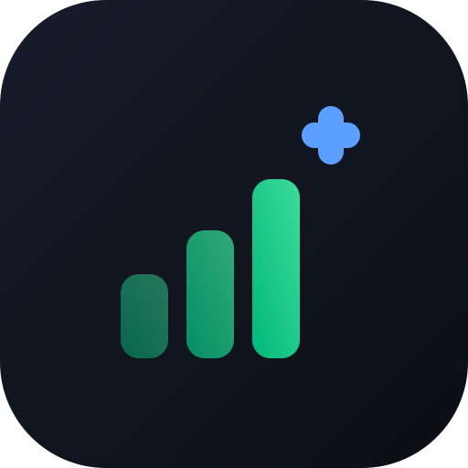

SumlyÚltima atualização: 12 de setembro de 2026
Ao criar uma conta no Sumly, você concorda com estes termos. Leia com atenção — eles definem o que esperamos de você e o que você pode esperar de nós.
O Sumly é uma ferramenta para organizar as finanças domésticas: registrar despesas e receitas, acompanhar investimentos, controlar dívidas e planejar compras, individualmente ou compartilhado com quem mora com você.
Você concorda em não:
O descumprimento pode levar ao encerramento da conta.
Você pode parar de renovar quando quiser, sem multa ou fidelidade. Conforme o Código de Defesa do Consumidor, você tem 7 dias a partir da contratação para desistir e receber reembolso integral. Basta escrever para [SEU E-MAIL].
Trabalhamos para manter o Sumly no ar, mas não garantimos funcionamento ininterrupto. Pode haver indisponibilidade por manutenção, falha em serviços de terceiros ou eventos fora do nosso controle.
Os dados que você registra são seus. Você pode exportá-los a qualquer momento e excluí-los quando quiser. Veja a Política de Privacidade para detalhes.
O Sumly é fornecido "como está". Não nos responsabilizamos por perdas decorrentes de decisões financeiras tomadas com base nas informações do app, indisponibilidade do serviço, ou perda de dados por causas fora do nosso controle. Recomendamos exportar seus dados periodicamente como backup.
Podemos atualizar estes termos. Mudanças relevantes serão avisadas dentro do app com antecedência. Continuar usando o Sumly após a mudança significa que você concorda com os novos termos.
Estes termos seguem as leis brasileiras. Eventuais disputas serão resolvidas no foro do domicílio do consumidor, conforme o Código de Defesa do Consumidor.